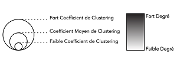

Sur ce graphique nous pouvons distinguer les projets liés par mots clés.
Un arc représente le nombre de mots clés qui relient deux projets selon leurs similitudes.
Nous pouvons dégager des clusters de cette représentation et les sélectionner un à un.
Le degré d'un noeud est représenté par sa couleur, plus la nuance est foncée plus le degré du noeud est élevé.
La taille de chaque noeud dépend de son coefficient de cluster.

PARAMETRES
Sur ce tableau vous pouvez récupérer des informations spécifiques aux graphes choisis:
La taille du graphe : Nombre d'arêtes que possède le graphe,
c'est à dire nombre de liaisons (le site A possède au minimum
un mot clé en commun avec le site B) pour le cluster choisi.
Degré : Nombre d'arêtes que possède un sommet i, c'est à dire
le nombre de mots clés en commun entre un site et les autres (exemple
: si le sommet A possède 4 arêtes, son degré sera égal à 4. Parmi ces
mots clés 4 d'entre eux sont utilisés aussi par d'autres sites artistiques).
Degré minimum : Le site (ou sommet) qui a le moins de mots clés en commun avec les autres sites.
Degré maximum : Le site (ou sommet) qui possède le plus de mots clés en commun avec les autres sites.
Degré moyen : En moyenne combien de mots clés en commun possèdent les sites entre eux dans le cluster choisi.
Coefficient de Clustering moyen : c'est la probabilité que deux voisins d'un sommet
(site) choisi aléatoirement soient eux-mêmes voisins. (exemple : un sommet A
possède 2 voisins B et C, le coefficient de clustering nous donne la probabilité
que B et C soient aussi connectés entre eux, c'est à dire que B et C possèdent aussi
des mots clés communs).
Echelle : Si CCM proche de 0 => Les sites artistiques du cluster choisi sont peu connectés entre eux.
Si CCM proche de 1 => Les sites artistiques du cluster choisi sont très connectés entre eux.
LDA
Sur le graphique ci-dessus nous vous présentons une « Latent Dirichlet Allocation »,
plus connue sous le nom de LDA.
Celle-ci permet de générer différents topics selon le cluster sélectionné.
On peut observer les mots composant les différents topics de 2 façons,
soit en passant le curseur sur le topic dans le graph soit en tapant un
nombre dans la barre de recherche située en haut à gauche du graphique
Faire varier le curseur λ permet de classer les termes selon leur pertinence.
À λ = 1, les termes du sujet sont classés en fonction de leur probabilité respective.
Faire varier le curseur permet de modifier le classement des termes en fonction de
leur pertinence pour le cluster choisi. Pour λ, la valeur ‘optimale’ conseillée est 0,6.
NUAGE DE MOTS CLES
Ce nuage de mot représente les mots clés les plus présents dans les liaisons entre les sites de ce cluster.
Plus le mot clé est gros, plus cela signifie qu'il est fréquent.
MATRICE D'ADJACENCE
Le tableau ci-dessus correspond à la matrice d'adjacence du cluster sélectionné. Ici on peut voir le poids de chaque arète et avoir une vision
globale sur le cluster des liaisons entre les sommets.